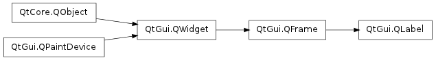

QLabel ¶

Synopsis ¶
Functions ¶
- def alignment ()
- def buddy ()
- def hasScaledContents ()
- def hasSelectedText ()
- def indent ()
- def margin ()
- def movie ()
- def openExternalLinks ()
- def picture ()
- def pixmap ()
- def selectedText ()
- def selectionStart ()
- def setAlignment (arg__1)
- def setBuddy (arg__1)
- def setIndent (arg__1)
- def setMargin (arg__1)
- def setOpenExternalLinks (open)
- def setScaledContents (arg__1)
- def setSelection (arg__1, arg__2)
- def setTextFormat (arg__1)
- def setTextInteractionFlags (flags)
- def setWordWrap (on)
- def text ()
- def textFormat ()
- def textInteractionFlags ()
- def wordWrap ()
Slots ¶
Signals ¶
- def linkActivated (link)
- def linkHovered (link)
Detailed Description ¶
The PySide.QtGui.QLabel widget provides a text or image display.
PySide.QtGui.QLabel is used for displaying text or an image. No user interaction functionality is provided. The visual appearance of the label can be configured in various ways, and it can be used for specifying a focus mnemonic key for another widget.
A PySide.QtGui.QLabel can contain any of the following content types:
Content Setting Plain text Pass a PySide.QtCore.QString to PySide.QtGui.QLabel.setText() . Rich text Pass a PySide.QtCore.QString that contains rich text to PySide.QtGui.QLabel.setText() . A pixmap Pass a PySide.QtGui.QPixmap to PySide.QtGui.QLabel.setPixmap() . A movie Pass a PySide.QtGui.QMovie to PySide.QtGui.QLabel.setMovie() . A number Pass an int or a double to PySide.QtGui.QLabel.setNum() , which converts the number to plain text. Nothing The same as an empty plain text. This is the default. Set by PySide.QtGui.QLabel.clear() . When the content is changed using any of these functions, any previous content is cleared.
By default, labels display left-aligned, vertically-centered text and images, where any tabs in the text to be displayed are automatically expanded . However, the look of a PySide.QtGui.QLabel can be adjusted and fine-tuned in several ways.
The positioning of the content within the PySide.QtGui.QLabel widget area can be tuned with PySide.QtGui.QLabel.setAlignment() and PySide.QtGui.QLabel.setIndent() . Text content can also wrap lines along word boundaries with PySide.QtGui.QLabel.setWordWrap() . For example, this code sets up a sunken panel with a two-line text in the bottom right corner (both lines being flush with the right side of the label):
label = QLabel ( self ) label . setFrameStyle ( QFrame . Panel | QFrame . Sunken ) label . setText ( "first line \n second line" ) label . setAlignment ( Qt . AlignBottom | Qt . AlignRight )The properties and functions PySide.QtGui.QLabel inherits from PySide.QtGui.QFrame can also be used to specify the widget frame to be used for any given label.
A PySide.QtGui.QLabel is often used as a label for an interactive widget. For this use PySide.QtGui.QLabel provides a useful mechanism for adding an mnemonic (see PySide.QtGui.QKeySequence ) that will set the keyboard focus to the other widget (called the PySide.QtGui.QLabel ‘s “buddy”). For example:
phoneEdit = QLineEdit ( self ) phoneLabel = QLabel ( "&Phone:" , self ) phoneLabel . setBuddy ( phoneEdit )In this example, keyboard focus is transferred to the label’s buddy (the PySide.QtGui.QLineEdit ) when the user presses Alt+P. If the buddy was a button (inheriting from PySide.QtGui.QAbstractButton ), triggering the mnemonic would emulate a button click.

A label shown in the Macintosh widget style . 
A label shown in the Plastique widget style . 
A label shown in the Windows XP widget style . See also
PySide.QtGui.QLineEdit PySide.QtGui.QTextEdit PySide.QtGui.QPixmap PySide.QtGui.QMovie GUI Design Handbook: Label
- class PySide.QtGui. QLabel ( [ parent=None [ , f=0 ] ] ) ¶
- class PySide.QtGui. QLabel ( text [ , parent=None [ , f=0 ] ] )
-
Parameters: - f – PySide.QtCore.Qt.WindowFlags
- parent – PySide.QtGui.QWidget
- text – unicode
- PySide.QtGui.QLabel. alignment ( ) ¶
-
Return type: PySide.QtCore.Qt.Alignment This property holds the alignment of the label’s contents.
By default, the contents of the label are left-aligned and vertically-centered.
See also
- PySide.QtGui.QLabel. buddy ( ) ¶
-
Return type: PySide.QtGui.QWidget Returns this label’s buddy, or 0 if no buddy is currently set.
See also
- PySide.QtGui.QLabel. clear ( ) ¶
-
Clears any label contents.
- PySide.QtGui.QLabel. hasScaledContents ( ) ¶
-
Return type: PySide.QtCore.bool This property holds whether the label will scale its contents to fill all available space..
When enabled and the label shows a pixmap, it will scale the pixmap to fill the available space.
This property’s default is false.
- PySide.QtGui.QLabel. hasSelectedText ( ) ¶
-
Return type: PySide.QtCore.bool This property holds whether there is any text selected.
PySide.QtGui.QLabel.hasSelectedText() returns true if some or all of the text has been selected by the user; otherwise returns false.
By default, this property is false.
Note
The PySide.QtGui.QLabel.textInteractionFlags() set on the label need to include either TextSelectableByMouse or TextSelectableByKeyboard.
See also
- PySide.QtGui.QLabel. indent ( ) ¶
-
Return type: PySide.QtCore.int This property holds the label’s text indent in pixels.
If a label displays text, the indent applies to the left edge if PySide.QtGui.QLabel.alignment() is Qt.AlignLeft , to the right edge if PySide.QtGui.QLabel.alignment() is Qt.AlignRight , to the top edge if PySide.QtGui.QLabel.alignment() is Qt.AlignTop , and to to the bottom edge if PySide.QtGui.QLabel.alignment() is Qt.AlignBottom .
If indent is negative, or if no indent has been set, the label computes the effective indent as follows: If PySide.QtGui.QFrame.frameWidth() is 0, the effective indent becomes 0. If PySide.QtGui.QFrame.frameWidth() is greater than 0, the effective indent becomes half the width of the “x” character of the widget’s current PySide.QtGui.QWidget.font() .
By default, the indent is -1, meaning that an effective indent is calculating in the manner described above.
- PySide.QtGui.QLabel. linkActivated ( link ) ¶
-
Parameters: link – unicode
- PySide.QtGui.QLabel. linkHovered ( link ) ¶
-
Parameters: link – unicode
- PySide.QtGui.QLabel. margin ( ) ¶
-
Return type: PySide.QtCore.int This property holds the width of the margin.
The margin is the distance between the innermost pixel of the frame and the outermost pixel of contents.
The default margin is 0.
See also
- PySide.QtGui.QLabel. movie ( ) ¶
-
Return type: PySide.QtGui.QMovie Returns a pointer to the label’s movie, or 0 if no movie has been set.
See also
- PySide.QtGui.QLabel. openExternalLinks ( ) ¶
-
Return type: PySide.QtCore.bool Specifies whether PySide.QtGui.QLabel should automatically open links using QDesktopServices.openUrl() instead of emitting the PySide.QtGui.QLabel.linkActivated() signal.
Note
The PySide.QtGui.QLabel.textInteractionFlags() set on the label need to include either LinksAccessibleByMouse or LinksAccessibleByKeyboard.
The default value is false.
- PySide.QtGui.QLabel. picture ( ) ¶
-
Return type: PySide.QtGui.QPicture Returns the label’s picture or 0 if the label doesn’t have a picture.
See also
- PySide.QtGui.QLabel. pixmap ( ) ¶
-
Return type: PySide.QtGui.QPixmap This property holds the label’s pixmap.
If no pixmap has been set this will return 0.
Setting the pixmap clears any previous content. The buddy shortcut, if any, is disabled.
- PySide.QtGui.QLabel. selectedText ( ) ¶
-
Return type: unicode This property holds the selected text.
If there is no selected text this property’s value is an empty string.
By default, this property contains an empty string.
Note
The PySide.QtGui.QLabel.textInteractionFlags() set on the label need to include either TextSelectableByMouse or TextSelectableByKeyboard.
- PySide.QtGui.QLabel. selectionStart ( ) ¶
-
Return type: PySide.QtCore.int PySide.QtGui.QLabel.selectionStart() returns the index of the first selected character in the label or -1 if no text is selected.
Note
The PySide.QtGui.QLabel.textInteractionFlags() set on the label need to include either TextSelectableByMouse or TextSelectableByKeyboard.
See also
- PySide.QtGui.QLabel. setAlignment ( arg__1 ) ¶
-
Parameters: arg__1 – PySide.QtCore.Qt.Alignment This property holds the alignment of the label’s contents.
By default, the contents of the label are left-aligned and vertically-centered.
See also
- PySide.QtGui.QLabel. setBuddy ( arg__1 ) ¶
-
Parameters: arg__1 – PySide.QtGui.QWidget Sets this label’s buddy to buddy .
When the user presses the shortcut key indicated by this label, the keyboard focus is transferred to the label’s buddy widget.
The buddy mechanism is only available for QLabels that contain text in which one character is prefixed with an ampersand, ‘&’. This character is set as the shortcut key. See the QKeySequence.mnemonic() documentation for details (to display an actual ampersand, use ‘&&’).
In a dialog, you might create two data entry widgets and a label for each, and set up the geometry layout so each label is just to the left of its data entry widget (its “buddy”), for example:
nameEd = QLineEdit ( self ) nameLb = QLabel ( "&Name:" , self ) nameLb . setBuddy ( nameEd ) phoneEd = QLineEdit ( self ) phoneLb = QLabel ( "&Phone:" , self ) phoneLb . setBuddy ( phoneEd ) # (layout setup not shown)With the code above, the focus jumps to the Name field when the user presses Alt+N, and to the Phone field when the user presses Alt+P.
To unset a previously set buddy, call this function with buddy set to 0.
- PySide.QtGui.QLabel. setIndent ( arg__1 ) ¶
-
Parameters: arg__1 – PySide.QtCore.int This property holds the label’s text indent in pixels.
If a label displays text, the indent applies to the left edge if PySide.QtGui.QLabel.alignment() is Qt.AlignLeft , to the right edge if PySide.QtGui.QLabel.alignment() is Qt.AlignRight , to the top edge if PySide.QtGui.QLabel.alignment() is Qt.AlignTop , and to to the bottom edge if PySide.QtGui.QLabel.alignment() is Qt.AlignBottom .
If indent is negative, or if no indent has been set, the label computes the effective indent as follows: If PySide.QtGui.QFrame.frameWidth() is 0, the effective indent becomes 0. If PySide.QtGui.QFrame.frameWidth() is greater than 0, the effective indent becomes half the width of the “x” character of the widget’s current PySide.QtGui.QWidget.font() .
By default, the indent is -1, meaning that an effective indent is calculating in the manner described above.
- PySide.QtGui.QLabel. setMargin ( arg__1 ) ¶
-
Parameters: arg__1 – PySide.QtCore.int This property holds the width of the margin.
The margin is the distance between the innermost pixel of the frame and the outermost pixel of contents.
The default margin is 0.
See also
- PySide.QtGui.QLabel. setMovie ( movie ) ¶
-
Parameters: movie – PySide.QtGui.QMovie Sets the label contents to movie . Any previous content is cleared. The label does NOT take ownership of the movie.
The buddy shortcut, if any, is disabled.
- PySide.QtGui.QLabel. setNum ( arg__1 ) ¶
-
Parameters: arg__1 – PySide.QtCore.double This is an overloaded function.
Sets the label contents to plain text containing the textual representation of double num . Any previous content is cleared. Does nothing if the double’s string representation is the same as the current contents of the label.
The buddy shortcut, if any, is disabled.
See also
PySide.QtGui.QLabel.setText() QString.setNum() PySide.QtGui.QLabel.setBuddy()
- PySide.QtGui.QLabel. setNum ( arg__1 )
-
Parameters: arg__1 – PySide.QtCore.int Sets the label contents to plain text containing the textual representation of integer num . Any previous content is cleared. Does nothing if the integer’s string representation is the same as the current contents of the label.
The buddy shortcut, if any, is disabled.
See also
PySide.QtGui.QLabel.setText() QString.setNum() PySide.QtGui.QLabel.setBuddy()
- PySide.QtGui.QLabel. setOpenExternalLinks ( open ) ¶
-
Parameters: open – PySide.QtCore.bool Specifies whether PySide.QtGui.QLabel should automatically open links using QDesktopServices.openUrl() instead of emitting the PySide.QtGui.QLabel.linkActivated() signal.
Note
The PySide.QtGui.QLabel.textInteractionFlags() set on the label need to include either LinksAccessibleByMouse or LinksAccessibleByKeyboard.
The default value is false.
- PySide.QtGui.QLabel. setPicture ( arg__1 ) ¶
-
Parameters: arg__1 – PySide.QtGui.QPicture Sets the label contents to picture . Any previous content is cleared.
The buddy shortcut, if any, is disabled.
- PySide.QtGui.QLabel. setPixmap ( arg__1 ) ¶
-
Parameters: arg__1 – PySide.QtGui.QPixmap This property holds the label’s pixmap.
If no pixmap has been set this will return 0.
Setting the pixmap clears any previous content. The buddy shortcut, if any, is disabled.
- PySide.QtGui.QLabel. setScaledContents ( arg__1 ) ¶
-
Parameters: arg__1 – PySide.QtCore.bool This property holds whether the label will scale its contents to fill all available space..
When enabled and the label shows a pixmap, it will scale the pixmap to fill the available space.
This property’s default is false.
- PySide.QtGui.QLabel. setSelection ( arg__1 , arg__2 ) ¶
-
Parameters: - arg__1 – PySide.QtCore.int
- arg__2 – PySide.QtCore.int
Selects text from position start and for length characters.
Note
The PySide.QtGui.QLabel.textInteractionFlags() set on the label need to include either TextSelectableByMouse or TextSelectableByKeyboard.
See also
- PySide.QtGui.QLabel. setText ( arg__1 ) ¶
-
Parameters: arg__1 – unicode This property holds the label’s text.
If no text has been set this will return an empty string. Setting the text clears any previous content.
The text will be interpreted either as plain text or as rich text, depending on the text format setting; see PySide.QtGui.QLabel.setTextFormat() . The default setting is Qt.AutoText ; i.e. PySide.QtGui.QLabel will try to auto-detect the format of the text set.
If a buddy has been set, the buddy mnemonic key is updated from the new text.
Note that PySide.QtGui.QLabel is well-suited to display small rich text documents, such as small documents that get their document specific settings (font, text color, link color) from the label’s palette and font properties. For large documents, use PySide.QtGui.QTextEdit in read-only mode instead. PySide.QtGui.QTextEdit can also provide a scroll bar when necessary.
Note
This function enables mouse tracking if text contains rich text.
- PySide.QtGui.QLabel. setTextFormat ( arg__1 ) ¶
-
Parameters: arg__1 – PySide.QtCore.Qt.TextFormat This property holds the label’s text format.
See the Qt.TextFormat enum for an explanation of the possible options.
The default format is Qt.AutoText .
See also
- PySide.QtGui.QLabel. setTextInteractionFlags ( flags ) ¶
-
Parameters: flags – PySide.QtCore.Qt.TextInteractionFlags Specifies how the label should interact with user input if it displays text.
If the flags contain Qt.LinksAccessibleByKeyboard the focus policy is also automatically set to Qt.StrongFocus . If Qt.TextSelectableByKeyboard is set then the focus policy is set to Qt.ClickFocus .
The default value is Qt.LinksAccessibleByMouse .
- PySide.QtGui.QLabel. setWordWrap ( on ) ¶
-
Parameters: on – PySide.QtCore.bool This property holds the label’s word-wrapping policy.
If this property is true then label text is wrapped where necessary at word-breaks; otherwise it is not wrapped at all.
By default, word wrap is disabled.
See also
- PySide.QtGui.QLabel. text ( ) ¶
-
Return type: unicode This property holds the label’s text.
If no text has been set this will return an empty string. Setting the text clears any previous content.
The text will be interpreted either as plain text or as rich text, depending on the text format setting; see PySide.QtGui.QLabel.setTextFormat() . The default setting is Qt.AutoText ; i.e. PySide.QtGui.QLabel will try to auto-detect the format of the text set.
If a buddy has been set, the buddy mnemonic key is updated from the new text.
Note that PySide.QtGui.QLabel is well-suited to display small rich text documents, such as small documents that get their document specific settings (font, text color, link color) from the label’s palette and font properties. For large documents, use PySide.QtGui.QTextEdit in read-only mode instead. PySide.QtGui.QTextEdit can also provide a scroll bar when necessary.
Note
This function enables mouse tracking if text contains rich text.
- PySide.QtGui.QLabel. textFormat ( ) ¶
-
Return type: PySide.QtCore.Qt.TextFormat This property holds the label’s text format.
See the Qt.TextFormat enum for an explanation of the possible options.
The default format is Qt.AutoText .
See also
- PySide.QtGui.QLabel. textInteractionFlags ( ) ¶
-
Return type: PySide.QtCore.Qt.TextInteractionFlags Specifies how the label should interact with user input if it displays text.
If the flags contain Qt.LinksAccessibleByKeyboard the focus policy is also automatically set to Qt.StrongFocus . If Qt.TextSelectableByKeyboard is set then the focus policy is set to Qt.ClickFocus .
The default value is Qt.LinksAccessibleByMouse .
- PySide.QtGui.QLabel. wordWrap ( ) ¶
-
Return type: PySide.QtCore.bool This property holds the label’s word-wrapping policy.
If this property is true then label text is wrapped where necessary at word-breaks; otherwise it is not wrapped at all.
By default, word wrap is disabled.
See also